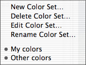
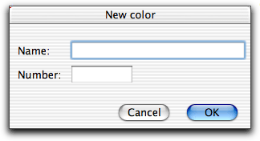

 You can define and name colors to use as background, text and link color etc. on your www pages. Later, when you insert an element with a color attribute, you can choose the color for the attribute from a menu. A set of 16 basic colors is provided by default. These are the 16 color names defined in HTML 4.0.
The 16 predefined colors
| Black = "#000000" | Green = "#008000" | ||
| Silver = "#C0C0C0" | Lime = "#00FF00" | ||
| Gray = "#808080" | Olive = "#808000" | ||
| White = "#FFFFFF" | Yellow = "#FFFF00" | ||
| Maroon = "#800000" | Navy = "#000080" | ||
| Red = "#FF0000" | Blue = "#0000FF" | ||
| Purple = "#800080" | Teal = "#008080" | ||
| Fuchsia = "#FF00FF" | Aqua = "#00FFFF" |
Your own colors are bundled in sets which can be activated and deactivated. Only the colors in the active sets appear in the popup menu for the color attributes. In this way you can have different sets of colors for different sites and only activate the ones which are needed for the site you currently work on.
Your color sets appear at the bottom of the menu. To activate or deactivate a set simply select it in the menu. The active ones are the ones which are marked in the menu.
To select a color set to edit use Edit Color Set.
In the popup menu in the dialog window shown above are all color names you have defined. Below is the hexadecimal number corresponding to the color selected in the menu.
The buttons in the window provide the following functionality:
